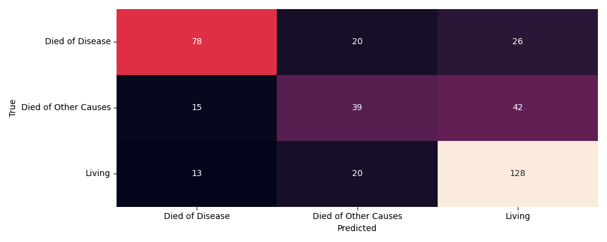
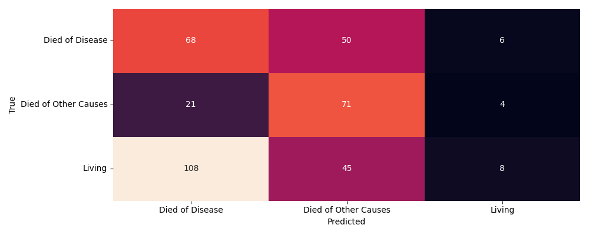
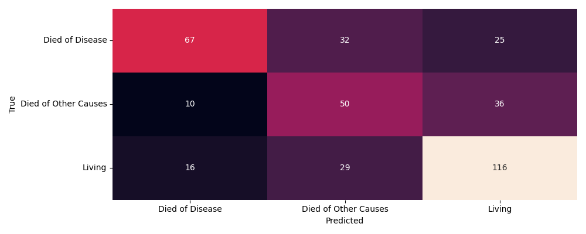
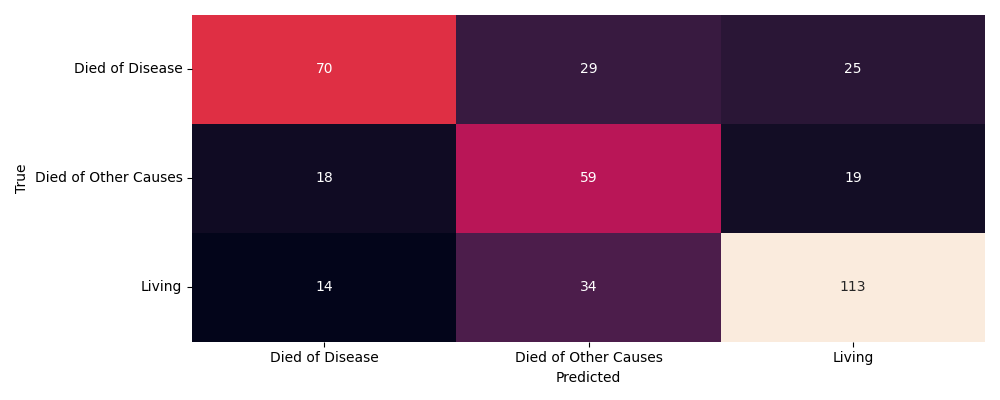
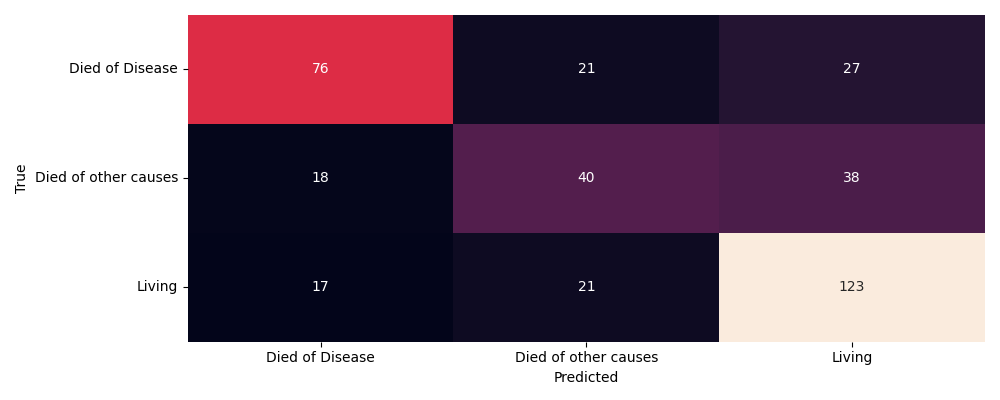
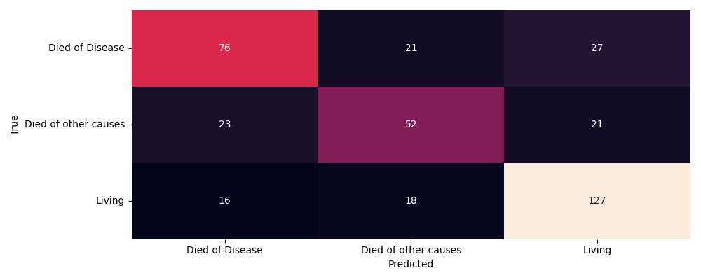

| zmienna | opis | |
|---|---|---|
| 0 | patient_id | Identyfikator pacjenta |
| 1 | age_at_diagnosis | Wiek przy diagnozie |
| 2 | type_of_breast_surgery | Typ operacji piersi |
| 3 | cancer_type | Typ nowotworu |
| 4 | cancer_type_detailed | Szczegółowy typ nowotworu |
| 5 | cellularity | Komórkowość guza |
| 6 | chemotherapy | Chemioterapia (tak/nie) |
| 7 | pam50_+_claudin-low_subtype | Podtyp molekularny PAM50/Claudin-low |
| 8 | cohort | Grupa badawcza |
| 9 | er_status_measured_by_ihc | Status ER mierzony IHC |
| 10 | er_status | Status receptorów estrogenowych |
| 11 | neoplasm_histologic_grade | Stopień histologiczny guza |
| 12 | her2_status_measured_by_snp6 | Status HER2 mierzony SNP6 |
| 13 | her2_status | Status HER2 |
| 14 | tumor_other_histologic_subtype | Podtyp histologiczny nowotworu |
| 15 | hormone_therapy | Terapia hormonalna (tak/nie) |
| 16 | inferred_menopausal_state | Status menopauzalny |
| 17 | integrative_cluster | Klaster molekularny |
| 18 | primary_tumor_laterality | Lokalizacja guza (lewa/prawa pierś) |
| 19 | lymph_nodes_examined_positive | Liczba zajętych węzłów chłonnych |
| 20 | mutation_count | Liczba mutacji |
| 21 | nottingham_prognostic_index | Indeks prognostyczny Nottingham |
| 22 | oncotree_code | Kod klasyfikacji OncoTree |
| 23 | overall_survival_months | Rzeczywisty czas przeżycia w miesiącach |
| 24 | overall_survival | Status przeżycia |
| 25 | pr_status | Status receptorów progesteronowych |
| 26 | radio_therapy | Radioterapia (tak/nie) |
| 27 | 3-gene_classifier_subtype | Podtyp klasyfikatora 3-genowego |
| 28 | tumor_size | Rozmiar guza |
| 29 | tumor_stage | Stadium nowotworu |
| 30 | death_from_cancer | Przyczyna zgonu / status życia |
Predykcja zgonu z powodu raka piersi z wykorzystaniem danych klinicznych i genomowych — analiza porównawcza modeli uczenia maszynowego na zbiorze METABRIC
1 Wstęp
1.1 Temat projektu
Tematem projektu jest analiza zbioru danych Breast Cancer Gene Expression Profiles (METABRIC) zawierającego informacje dotyczące cech klinicznych pacjentów oraz genomicznych oraz budowa modelu przewidującego klasę zmiennej wynikowej death from cancer tzn. czy dana pacjentka umrze z powodu nowotworu, innych przyczyn (głównie medycznych), czy przeżyje.
1.2 Opis zbioru
Zbiór składa się z 30 zmiennych klinicznych 173 zmiennych binarnych informujące o wystąpieniu lub braku mutacji danego genu i 489 zmiennych dotyczących poziomu ekspresji genów.
1.3 Braki danych
Poniższa ramka zawiera liczbę braków danych w kolumnach i ich udział procentowy
| Unnamed: 0 | liczba_brakow | procent_brakow | |
|---|---|---|---|
| 0 | tumor_stage | 501 | 26.313025 |
| 1 | 3-gene_classifier_subtype | 204 | 10.714286 |
| 2 | primary_tumor_laterality | 106 | 5.567227 |
| 3 | neoplasm_histologic_grade | 72 | 3.781513 |
| 4 | cellularity | 54 | 2.836134 |
| 5 | ep300_mut | 54 | 2.836134 |
| 6 | myo1a_mut | 47 | 2.468487 |
| 7 | fanca_mut | 46 | 2.415966 |
| 8 | mutation_count | 45 | 2.363445 |
| 9 | myo3a_mut | 45 | 2.363445 |
| 10 | ptprm_mut | 37 | 1.943277 |
| 11 | gldc_mut | 35 | 1.838235 |
| 12 | sbno1_mut | 32 | 1.680672 |
| 13 | kdm3a_mut | 32 | 1.680672 |
| 14 | er_status_measured_by_ihc | 30 | 1.575630 |
| 15 | fam20c_mut | 28 | 1.470588 |
| 16 | npnt_mut | 26 | 1.365546 |
| 17 | nek1_mut | 25 | 1.313025 |
| 18 | sik1_mut | 24 | 1.260504 |
| 19 | type_of_breast_surgery | 22 | 1.155462 |
| 20 | stk11_mut | 21 | 1.102941 |
| 21 | sik2_mut | 21 | 1.102941 |
| 22 | ptpn22_mut | 20 | 1.050420 |
| 23 | tumor_size | 20 | 1.050420 |
| 24 | flt3_mut | 19 | 0.997899 |
| 25 | taf4b_mut | 18 | 0.945378 |
| 26 | hdac9_mut | 18 | 0.945378 |
| 27 | prkacg_mut | 17 | 0.892857 |
| 28 | large1_mut | 16 | 0.840336 |
| 29 | tumor_other_histologic_subtype | 15 | 0.787815 |
| 30 | oncotree_code | 15 | 0.787815 |
| 31 | cancer_type_detailed | 15 | 0.787815 |
| 32 | ppp2r2a_mut | 13 | 0.682773 |
| 33 | nf2_mut | 12 | 0.630252 |
| 34 | ldlrap1_mut | 12 | 0.630252 |
| 35 | clrn2_mut | 12 | 0.630252 |
| 36 | prr16_mut | 11 | 0.577731 |
| 37 | dtwd2_mut | 11 | 0.577731 |
| 38 | ctnna1_mut | 11 | 0.577731 |
| 39 | agtr2_mut | 11 | 0.577731 |
| 40 | magea8_mut | 11 | 0.577731 |
| 41 | foxo1_mut | 10 | 0.525210 |
| 42 | nt5e_mut | 10 | 0.525210 |
| 43 | braf_mut | 10 | 0.525210 |
| 44 | ccnd3_mut | 9 | 0.472689 |
| 45 | nr3c1_mut | 9 | 0.472689 |
| 46 | tbl1xr1_mut | 8 | 0.420168 |
| 47 | rasgef1b_mut | 7 | 0.367647 |
| 48 | spaca1_mut | 7 | 0.367647 |
| 49 | smad2_mut | 7 | 0.367647 |
| 50 | sgcd_mut | 7 | 0.367647 |
| 51 | hist1h2bc_mut | 6 | 0.315126 |
| 52 | nr2f1_mut | 5 | 0.262605 |
| 53 | klrg1_mut | 5 | 0.262605 |
| 54 | mbl2_mut | 4 | 0.210084 |
| 55 | ppp2cb_mut | 4 | 0.210084 |
| 56 | smarcd1_mut | 4 | 0.210084 |
| 57 | nras_mut | 3 | 0.157563 |
| 58 | hras_mut | 2 | 0.105042 |
| 59 | smarcb1_mut | 2 | 0.105042 |
| 60 | stmn2_mut | 2 | 0.105042 |
| 61 | death_from_cancer | 1 | 0.052521 |
| 62 | siah1_mut | 1 | 0.052521 |
| liczba_braków | |
|---|---|
| 0 | 1907 |
Tyle komórek zawiera brak.
| puste rekordy | |
|---|---|
| 0 | 0 |
Brak całkowicie pustych wierszy.
| Procent wierszy zawierających przynajmniej jeden brak | |
|---|---|
| 0 | 60.451681 |
Tylko około 40% wierszy jest całkowicie pełnych
2 Eksploracja zbioru
2.1 Mechanizm braków danych
Rodzaj braków danych będzie decydował o sposobie ich uzupełnienia dlatego została zbadana zależność braków od zmiennych kategorycznych za pomocą testu \(\chi^2\)
| missing in: | chi2: | p_value | category | |
|---|---|---|---|---|
| 0 | tumor_stage | 1232.591922 | 1.369488e-265 | cohort |
| 1 | tumor_size | 1904.000000 | 2.837066e-227 | nottingham_prognostic_index |
| 2 | taf4b_mut | 894.526099 | 1.710882e-105 | ahnak_mut |
| 3 | dtwd2_mut | 775.859067 | 1.242236e-104 | birc6_mut |
| 4 | magea8_mut | 689.992221 | 1.060860e-101 | atr_mut |
| 5 | tbl1xr1_mut | 950.224663 | 2.442776e-100 | map3k1_mut |
| 6 | primary_tumor_laterality | 432.628339 | 2.471940e-92 | cohort |
| 7 | tbl1xr1_mut | 712.343264 | 9.848451e-90 | herc2_mut |
| 8 | dtwd2_mut | 690.088736 | 1.107892e-87 | tg_mut |
| 9 | neoplasm_histologic_grade | 1087.443421 | 3.110273e-87 | nottingham_prognostic_index |
Uwzględniono jedynie zmienne charakteryzujące się liczbą braków większą od mediany liczby brakujących obserwacji.
Jednak ilość wykonanych testów:
| liczba_testów_chi2: | |
|---|---|
| 0 | 6987 |
Sprawia, że prawdopodobieństwa niesłusznego odrzucenia hipotezy zerowej o naturze MCAR (Missing completely at random) wynosi:
1.000000e+00Jest niemal pewne, że uznamy odrzucimy hipotezę zerową niesłusznie przynajmniej raz. Dlatego zastosowano poprawkę Benjaminiego-Hochberga.
Dodatkowo każdą parę sklasyfikowano według typu relacji: gene–gene, clinic–clinic, gene–clinic lub clinic–gene, co umożliwiło ocenę zależności pomiędzy brakami danych w obrębie oraz pomiędzy grupami zmiennych. Nowy wynik po korekcie:
| missing in: | chi2: | p_value | category | p_adj | type | |
|---|---|---|---|---|---|---|
| 0 | tumor_stage | 1232.591922 | 1.369488e-265 | cohort | 9.568613e-262 | clinic-clinic |
| 1 | tumor_size | 1904.000000 | 2.837066e-227 | nottingham_prognostic_index | 9.911289e-224 | clinic-clinic |
| 2 | taf4b_mut | 894.526099 | 1.710882e-105 | ahnak_mut | 3.984645e-102 | gene-gene |
| 3 | dtwd2_mut | 775.859067 | 1.242236e-104 | birc6_mut | 2.169875e-101 | gene-gene |
| 4 | magea8_mut | 689.992221 | 1.060860e-101 | atr_mut | 1.482446e-98 | gene-gene |
Zmienne które nie znajdują się w kolumnie missing in zostały oznaczone jako zmienne zawierające losowe braki danych, te które się w niej znajdują będą wymagały bardziej przemyślanego uzupełnienia aby nie wprowadzać stronniczości do zbioru. Odpowiednia obsługa braków znajduje się w dalszej części.
2.2 Przeżywalność, grupa wiekowa, typ operacji i kombinacja terapii
Na wykresie przedstawiono rozkłady czasu przeżycia prognozowanego w miesiącach dla różnych kombinacji terapii, z podziałem na grupy wiekowe oraz rodzaj przeprowadzonego zabiegu chirurgicznego. 
Wykres sugeruje, że rzeczywisty czas przeżycia zależy od kombinacji wieku, typu operacji i terapii, jednak zależności te nie tworzą jednego spójnego trendu. Widoczne są duże nakładania się rozkładów oraz zróżnicowanie wewnątrz grup, co wskazuje na silną heterogeniczność badanej populacji.
2.3 Rozkład zmiennej wynikowej ze względu na rodzaj terapii

Udziały poziomów zmiennej wynikowej różnią się pomiędzy rodzajami terapii, jednak niekoniecznie oznacza to różnice w skuteczności, ponieważ pacjenci mogli być leczeni niektórymi kombinacjami w zależności od powagi ich sytuacji.
2.4 Lata przeżycia od diagnozy
Dla pacjentów którzy zmarli w wyniku choroby nowotworowej poniższy wykres przedstawia rozkład prawdopodobieństwa rzeczywistych lat przeżycia od diagnozy

Rozkłady rzeczywistego czasu przeżycia dla poszczególnych kombinacji terapii wykazują znaczne nakładanie się, co sugeruje brak wyraźnej separacji pomiędzy analizowanymi grupami. W większości przypadków największa koncentracja obserwacji występowała w zakresie kilku pierwszych lat od diagnozy, natomiast dla części kombinacji terapii widoczny był dłuższy prawostronny ogon rozkładu, wskazujący na obecność pacjentów osiągających znacznie dłuższe czasy przeżycia.
2.5 Korelacja zmiennych klinicznych
Zbadano współzmienność zmiennych klinicznych.

Współczynniki korelacji nie przedstawiają znaczących wartośći, jednak wnioski które można wyciągnąć są raczej zgodne z ogólną intuicją. Na przykład średnia ilość rzeczywistych miesięcy przeżycia zmniejsza się wraz ze wzrostem liczby zajętych węzłów chłonnych (overall survival months ~ lymph_nodes_examined_positive), identycznie dla miesięcy przeżycia i rozmiaru guza (overall survival months ~ tumor size). Niskie współczynniki korelacji, mogą wskazywać na wpływ innych czynników na ogólny dobrostan pacjentów.
2.6 Balans zmiennej wynikowej
| count | |
|---|---|
| death_from_cancer | |
| Living | 801 |
| Died of Disease | 622 |
| Died of Other Causes | 480 |
Liczności poziomów zmiennej wynikowej różnią się od siebie dlatego w dalszych częściach pracy nad modelami należy uwzględnić inne metryki niż tylko dokładność klasyfikacji.
2.7 Rozkład zmiennych klinicznych
Tabela przedstawia ogólny rozkład numerycznych zmiennych klinicznych 
Jako, że rozmiar guza potrafi przyjmować bardzo wysokie wartości, postanowiono zbadać obecność obserwacji odstających. Przyjęto wariant wielowymiarowy aby uwzględnić relacje pomiędzy zmiennymi. Wykorzystano do tego odległość mahalanobisa.
Kwadraty odległości mahalanobisa większe niż 99 kwantyl rozkładu \(\chi^2\) uznano za wartości odstające i nadano im odpowiednią flagę w zbiorze danych.
| Liczba odstających | Pozostałe |
|---|---|
| 152 | 1752 |
Wielowymiarowe obserwacje odstające stanowią niewielką część zbioru, ale samo bycie obserwacją odstające może być informacją samą w sobie dlatego nie zostaną usunięte.
3 Redukcja wymiarowości
3.1 PCA
Zbiór posiada 489 zmiennych dotyczących ekspresji genów, co jest bardzo dużą liczbą zmiennych mogących nieść tą samą informację. Sama korelacja zmiennych dotyczących ekspresji genów nie została zbadana, więc jako narzędzie eksploracyjne zastosowano analizę składowych głównych (Principal component analysis) aby zredukować wymiarowość i otrzmać nieskorelowane komponenty przy zachowaniu jak największej zmienności oryginalnych danych.
Dane zostały przeskalowane oraz oczyszczone z braków (tylko dla PCA)

Niestety aby zachować przynajmniej 90% wariancji wyjaśnionej, otrzymano 360 komponentów. Naszym zdaniem redukcja z 489 zmiennych do 360 komponentów jest niewystarczająca i nie poprawia sytuacji.
3.2 ICA
Analiza niezależnych składowych, teoretycznie wydaje się lepszym wyborem. Założono, że zmienne dotyczący ekspresji genów można opisać za pomocą mniejszej liczby komponentów reprezentujących niezależne procesy biologiczne. Niech:
\[X \in \mathbb{R}^{n \times p}\]
oznacza macierz danych wejściowych, gdzie \(n\) jest liczbą obserwacji, a \(p\) liczbą zmiennych. Metoda ICA aproksymuje macierz danych zależnością:
\[X \approx SA\]
gdzie:
\(S\) – macierz składowych niezależnych, \(A\) – macierz wag (mixing matrix).
Po wyznaczeniu określonej liczby składowych możliwe jest odtworzenie przybliżonej wersji danych wejściowych:
\[\hat{X} = SA\]
Jako miarę jakości rekonstrukcji wykorzystano średni błąd kwadratowy (Mean Squared Error, MSE):
\[MSE = \frac{1}{np} \sum_{i=1}^{n} \sum_{j=1}^{p} \left( X_{ij} - \hat{X}_{ij} \right)^2\]
gdzie:
\(X_{ij}\) oznacza rzeczywistą wartość zmiennej, \(\hat{X}_{ij}\) oznacza wartość odtworzoną na podstawie modelu ICA.
Błąd rekonstrukcji informuje o stopniu utraty informacji wynikającej z redukcji wymiarowości.
Dane zostały odpowiednio przetworzone i zbadane pod kątem skośności i kurtozy.
Moda skośności:
1.194189471865714e-16
Moda kurtozy:
-1.2000006620297008
Opis skośności:
count 490.000000
mean 0.834287
std 1.197301
min -1.833278
25% 0.149774
50% 0.521214
75% 1.224449
max 8.156119
dtype: float64
Opis kurtozy:
count 490.000000
mean 4.703530
std 11.316665
min -1.200001
25% 0.531609
50% 1.256374
75% 3.594279
max 124.703488
dtype: float64Dominuje prawoskośność przy zróżnicowanym współczynniku kurtozy. Właściwości te są korzystne z punktu widzenia metody ICA, która opiera się na identyfikacji statystycznie niezależnych i niegaussowskich sygnałów ukrytych w danych.
Poniżej wykres błędu w zależności od liczby wybranych składowych: 
Wybrano 60 składowych niezależnych aby zredukować wymiar jak najbardziej przy akceptowalnym błędzie rekonstrukcji.
3.2.1 Interpretacja pierwszych pięciu komponentów
W celu interpretacji biologicznej wyodrębnionych komponentów ICA przeanalizowano geny o najwyższych dodatnich i ujemnych wartościach wag. Na podstawie literatury naukowej przypisano poszczególnym komponentom najbardziej prawdopodobne procesy biologiczne i szlaki sygnałowe. Należy podkreślić, że zaproponowane nazwy komponentów mają charakter interpretacyjny i wynikają z dominujących genów oraz ich funkcji biologicznych.
| IC | Nazwa | Geny (+) | Geny (-) | Proces |
|---|---|---|---|---|
| IC1 | TGF-β/BMP i EMT | SMAD6, BMP2, BMP15 | GDF2, MTAP, BBC3 | EMT, progresja nowotworu |
| IC2 | FGF i angiogeneza | FGF2, ITGB3, SERPINI1 | RAF1, CDK8 | Angiogeneza |
| IC3 | SWI/SNF | ARID1A, PBRM1, KDM6A | MAML3, E2F1 | Stabilność genomu |
| IC4 | Notch | RBPJ, MAML1, ADAM10 | MAML2, NOX4 | Różnicowanie komórek |
| IC5 | Metabolizm steroidów | — | UGT2B7, UGT2B15, UGT2B17 | Glukuronidacja |
IC1 – Sygnalizacja TGF-β/BMP i EMT
Komponent IC1 zdominowany jest przez geny należące do rodziny BMP oraz regulatorów szlaku TGF-β. Szczególnie wysokie dodatnie wagi uzyskały geny SMAD6, BMP2 oraz BMP15, natomiast ujemne wartości odnotowano między innymi dla GDF2, MTAP i BBC3. Wskazuje to na obecność osi biologicznej związanej z sygnalizacją TGF-β/BMP.
Szlak TGF-β pełni podwójną funkcję w nowotworach. We wczesnych etapach może działać supresorowo poprzez indukcję apoptozy i zatrzymanie cyklu komórkowego, natomiast w zaawansowanych stadiach wspiera proces przejścia nabłonkowo-mezenchymalnego (EMT), inwazję i tworzenie przerzutów. Wysokie wartości IC1 można zatem interpretować jako zwiększoną aktywność procesów związanych z EMT i progresją nowotworu.
IC2 – Angiogeneza i sygnalizacja FGF
Największe dodatnie wagi w komponencie IC2 uzyskały geny FGF2, ITGB3, SERPINI1 oraz BMP4. W literaturze FGF2 uznawany jest za jeden z kluczowych regulatorów proliferacji komórek nowotworowych oraz angiogenezy.
Wysokie wartości komponentu mogą odpowiadać nasileniu procesów wzrostu guza, tworzenia naczyń krwionośnych oraz zwiększonej aktywności mikrośrodowiska nowotworowego. Ujemne wagi genów takich jak RAF1 czy CDK8 sugerują obecność przeciwstawnych mechanizmów regulacyjnych.
IC3 – Remodelowanie chromatyny i kontrola stabilności genomu
Komponent IC3 skupia geny związane z kompleksem remodelującym chromatynę SWI/SNF, w szczególności ARID1A, PBRM1 i KDM6A. Dodatkowo wysoką wagę uzyskał gen FBXW7, będący ważnym supresorem nowotworowym odpowiedzialnym za degradację wielu onkoprotein.
Interpretacja biologiczna tego komponentu wskazuje na procesy związane z regulacją transkrypcji, naprawą DNA oraz utrzymaniem stabilności genomowej. Wysokie wartości IC3 mogą odpowiadać zachowaniu funkcji supresorowych, natomiast niskie wartości mogą wskazywać na utratę kontroli nad proliferacją komórkową.
IC4 – Aktywacja szlaku Notch
Wysokie dodatnie wagi genów RBPJ, MAML1, ADAM10 i HES5 wskazują na silny związek komponentu IC4 z aktywnością szlaku Notch. Białko RBPJ stanowi centralny element kompleksu transkrypcyjnego Notch, natomiast MAML1 działa jako jego koaktywator.
Aktywacja szlaku Notch jest związana między innymi z utrzymaniem komórek macierzystych nowotworu, regulacją różnicowania komórkowego oraz kontrolą proliferacji. Wysokie wartości IC4 mogą wskazywać na zwiększoną aktywność tych procesów.
IC5 – Metabolizm hormonów steroidowych
Komponent IC5 charakteryzuje się dominacją genów UGT2B7, UGT2B15 oraz UGT2B17, które uczestniczą w procesach glukuronidacji hormonów steroidowych.
Enzymy UGT odpowiadają za sprzęganie estrogenów i androgenów, prowadząc do ich inaktywacji i usuwania z komórki. Wysokie wartości komponentu można interpretować jako zwiększony metabolizm hormonów płciowych, natomiast niskie wartości mogą sprzyjać utrzymaniu wyższej aktywności sygnalizacji hormonalnej w komórkach nowotworowych.
Bibliografia:
Liu J., Wang C. i wsp. TGF-β in Tumor Development and Progression: Mechanisms and Therapeutics. Molecular Biomedicine, 2026.
Santolla M.F., Maggiolini M. The FGF/FGFR System in Breast Cancer: Oncogenic Features and Therapeutic Perspectives. Cancers, 2020.
Gopalakrishnan S., Patel D., Shah M., Relan S. A Review of ARID1A’s Role in Breast Cancer Progression. Cancers, 2026.
Huang Z., Zhou J. i wsp. RBPJ Maintains Brain Tumor-Initiating Cells Through CDK9-Mediated Transcriptional Elongation. Journal of Clinical Investigation, 2016.
Harrington W.R., Sengupta S. i wsp. Estrogen Regulation of the Glucuronidation Enzyme UGT2B15 in Estrogen Receptor-Positive Breast Cancer Cells. Endocrinology, 2006.
Jiang X., Xiang W., Wang X. i wsp. Tumor Suppressor FBXW7 and Its Regulation of DNA Damage Response and Repair. Frontiers in Cell and Developmental Biology, 2021.
3.2.2 Zróżnicowanie genowe komponentów
Dla każdej z 1770 kombinacji komponentów zbadano ich podobieńtwo za pomocą indeksu Jaccarda
\[Jaccard(IC{i}IC{j})=\frac{IC{i} \cap IC{j}}{IC{i} \cup IC{j}}\]
Poniższa macierz przedstawia podobieństwo: 
Maksymalna wartość indeksu Jaccarda wynosząca około 0.16 wskazuje na niewielkie nakładanie się genów dominujących w poszczególnych komponentach. Oznacza to, że większość składowych jest związana z odmiennymi zestawami genów i prawdopodobnie reprezentuje różne mechanizmy biologiczne.
3.3 Wizualizacja pacjentów w przestrzeni UMAP
W celu oceny, czy wyznaczone komponenty ICA zawierają informację pozwalającą na rozróżnianie molekularnych podtypów nowotworu, zastosowano algorytm UMAP (Uniform Manifold Approximation and Projection). Metoda ta umożliwia nieliniową redukcję wymiarowości przy zachowaniu lokalnej struktury danych.
Jako dane wejściowe wykorzystano 60 składowych uzyskanych metodą ICA. Następnie dokonano projekcji pacjentów do przestrzeni dwuwymiarowej. Punkty na wykresie odpowiadają pojedynczym pacjentom, natomiast kolor oznacza przynależność do podtypu molekularnego określonego przez zmienną *pam50_+_claudin-low_subtype*.
Zmienna domyślnie składa się z 7 kategorii:
<StringArray>
['claudin-low', 'LumA', 'LumB', 'Her2', 'Normal', 'Basal', 'NC']
Length: 7, dtype: strPrzypisano cyfry: 0. Claudin-low
LumA
LumB
Her2
Normal
Basal
NC
Celem analizy nie była interpretacja osi UMAP1 i UMAP2, ponieważ nie posiadają one bezpośredniego znaczenia biologicznego. Analizie poddano natomiast rozmieszczenie pacjentów w przestrzeni UMAP oraz stopień grupowania obserwacji należących do tych samych podtypów molekularnych.

Na wykresie zaobserwowano częściową separację poszczególnych klas. Pacjenci należący do niektórych podtypów wykazują tendencję do zajmowania określonych regionów przestrzeni UMAP, jednak nie występują całkowicie rozłączne klastry. Oznacza to, że informacje zawarte w komponentach ICA pozwalają na częściowe różnicowanie podtypów PAM50, choć granice pomiędzy klasami pozostają w znacznym stopniu nakładające się.
4 Budowa modelu przewidującego poziom zmiennej wynikowej
Zgodnie z wcześniejszym klasyfikowaniem braków jako MCAR lub MAR zastosowano preprocessing przed budową modelu, uzupełniający braki losowe medianą dla zmiennych numerycznych i modą dla kategorycznych. Dla zmiennych numerycznych zastosowano również standaryzację (mimo, że dla modeli drzewiastych nie jest to wymagane). Braki zależne od innych kategorycznych zaimputowano za pomocą iteracyjnego imputera o 20 iteracjach i ziarnie losowania ustawionym na bieżący rok.
4.1 Cat boost
Z powodu dużej ilości zmiennych kategorycznych zawierających po kilka lub kilkanaście kategorii (szczególnie zmienne dotyczące mutacji potrafią składać się z wielu poziomów zakodowanych jednocześnie jako liczby i nazwy) zastosowanie OneHotEncodingu byłoby trudne i jeszcze bardziej zwiększałoby wymiarowość. Dla zbioru testowego czy walidacyjnego liczba zmiennych mogłaby nawet przekraczać liczbę obserwacji.
Optymalnym rozwiązaniem wydawał się Cat boosting.
Dane podzielono na zbiór treningowy, walidacyjny i testowy w proporcji 3:1:1.
4.1.1 Budowa pierwszego modelu
Model zbudowano na poniższych parametrach które zostały strojone w oparciu o jak najwyższe f1-score dla zbioru walidacyjnego ale bez zbyt dużej różnicy na zbiorze treningowym aby uniknąć przetrenowania. Starano się dobrać jak najgłębsze drzewa ze względu na dużą liczbę zmiennych, niskim learning rate i co za tym idzie jak największą liczbę drzew. Aby uniknąć przeuczenia zastosowano karę za złożoność i minimalną liczbę pacjentów do budowy liścia aby model nie skupiał się na pojedyńczych szczegółach.
| Unnamed: 0 | iterations | learning_rate | depth | l2_leaf_reg | loss_function | border_count | random_seed | verbose | random_strength | custom_metric | eval_metric | min_data_in_leaf |
|---|---|---|---|---|---|---|---|---|---|---|---|---|
| 0 | 1000 | 0.030000 | 4 | 10 | MultiClass | 20 | 2026 | 100 | 5 | Accuracy | TotalF1 | 15 |
Poniżej wagi cech:
| Unnamed: 0 | wagi | cechy |
|---|---|---|
| 3 | 29.344662 | overall_survival_months |
| 1 | 22.129998 | age_at_diagnosis |
| 9 | 6.545552 | IC3 |
| 0 | 3.541668 | Unnamed: 0 |
| 2 | 2.727808 | lymph_nodes_examined_positive |
| 8 | 2.015436 | IC2 |
| 4 | 1.584302 | nottingham_prognostic_index |
| 14 | 1.254747 | IC8 |
| 224 | 1.223695 | npnt_mut |
| 228 | 1.146634 | sik1_mut |
| 13 | 0.919151 | IC7 |
| 5 | 0.826027 | tumor_size |
| 186 | 0.796600 | prkce_mut |
| 210 | 0.718436 | nr3c1_mut |
| 174 | 0.704558 | men1_mut |
| 234 | 0.695741 | type_of_breast_surgery |
| 201 | 0.658685 | dtwd2_mut |
| 241 | 0.596192 | ep300_mut |
| 183 | 0.588691 | clk3_mut |
| 204 | 0.569203 | primary_tumor_laterality |
Dość wysoką wagę ma zmienna Unnamed:0 która jest zmienną zawierającą informację o niczym tak naprawdę bo jest to numer wiersza. Cały model zostanie wytrenowany ponownie bez tej zmiennej jednak mimo wszystko poniżej znajdują się ogólne metryki.
| Unnamed: 0 | precision | recall | f1-score | support |
|---|---|---|---|---|
| Died of Disease | 0.722222 | 0.629032 | 0.672414 | 124.000000 |
| Died of Other Causes | 0.530864 | 0.447917 | 0.485876 | 96.000000 |
| Living | 0.677083 | 0.807453 | 0.736544 | 161.000000 |
| accuracy | 0.658793 | 0.658793 | 0.658793 | 0.658793 |
| macro avg | 0.643390 | 0.628134 | 0.631611 | 381.000000 |
| weighted avg | 0.654932 | 0.658793 | 0.652512 | 381.000000 |
4.1.2 Budowa modelu po usunięciu zmiennej Unnamed: 0
Po usunięciu zmiennej model wytrenowano na identycznych parametrach:
Przebieg wartości metryk podczas treningu na 1000 iteracji:

Lista wag zmiennych:
| Unnamed: 0 | wagi | cechy |
|---|---|---|
| 2 | 27.194109 | overall_survival_months |
| 0 | 21.827896 | age_at_diagnosis |
| 8 | 8.345248 | cohort |
| 1 | 2.518802 | lymph_nodes_examined_positive |
| 3 | 2.136793 | nottingham_prognostic_index |
| 7 | 1.723083 | pam50_+_claudin-low_subtype |
| 12 | 1.639950 | inferred_menopausal_state |
| 173 | 1.426379 | type_of_breast_surgery |
| 13 | 1.400039 | integrative_cluster |
| 227 | 1.312188 | IC45 |
| 223 | 1.238368 | IC41 |
| 209 | 0.887856 | IC27 |
| 233 | 0.863983 | IC51 |
| 189 | 0.798668 | IC7 |
| 230 | 0.751670 | IC48 |
| 240 | 0.687359 | IC58 |
| 222 | 0.678106 | IC40 |
| 185 | 0.640620 | IC3 |
| 200 | 0.636656 | IC18 |
| 143 | 0.569896 | primary_tumor_laterality |
Jak widzimy najwyższe wagi posiadają zmienne kliniczne.
Pierwsze drzewo:

Macierz pomyłek:

Ogólnie macierz pomyłek wskazuje, że model najskuteczniej identyfikuje pacjentów żyjących, natomiast największym wyzwaniem jest prawidłowe rozpoznanie zgonów niezwiązanych bezpośrednio z chorobą nowotworową.
Metryki:
| Unnamed: 0 | precision | recall | f1-score | support |
|---|---|---|---|---|
| Died of Disease | 0.735849 | 0.629032 | 0.678261 | 124.000000 |
| Died of Other Causes | 0.493671 | 0.406250 | 0.445714 | 96.000000 |
| Living | 0.653061 | 0.795031 | 0.717087 | 161.000000 |
| accuracy | 0.643045 | 0.643045 | 0.643045 | 0.643045 |
| macro avg | 0.627527 | 0.610104 | 0.613687 | 381.000000 |
| weighted avg | 0.639844 | 0.643045 | 0.636073 | 381.000000 |
Co dziwne po usunięciu niepotrzebnej zmiennej ważone f1 modelu spadło.
4.1.3 Model zawierający jedynie zmienne kliniczne
Ponieważ najwyższe wagi należą i tak do zmiennych klinicznych, zbudowano model zawierający wyłącznie zmienne kliniczne.
Parametry modelu są identyczne.
Lista wag zmiennych:
| Unnamed: 0 | wagi | cechy |
|---|---|---|
| 2 | 31.397845 | overall_survival_months |
| 0 | 20.618216 | age_at_diagnosis |
| 8 | 10.344717 | cohort |
| 13 | 5.479458 | integrative_cluster |
| 7 | 4.984526 | pam50_+_claudin-low_subtype |
| 24 | 3.987972 | 3-gene_classifier_subtype |
| 1 | 3.087854 | lymph_nodes_examined_positive |
| 17 | 2.463155 | neoplasm_histologic_grade |
| 3 | 2.022021 | nottingham_prognostic_index |
| 15 | 1.920809 | tumor_stage |
| 22 | 1.799992 | type_of_breast_surgery |
| 23 | 1.685885 | cellularity |
| 10 | 1.671679 | her2_status_measured_by_snp6 |
| 4 | 1.592813 | tumor_size |
| 5 | 1.460499 | mutation_count |
| 14 | 1.045784 | pr_status |
| 19 | 0.924415 | oncotree_code |
| 16 | 0.863381 | primary_tumor_laterality |
| 20 | 0.795841 | tumor_other_histologic_subtype |
| 18 | 0.757549 | cancer_type_detailed |
Macierz pomyłek:

Model bardzo niechętnie przewiduje klase Living, mimo że występuje najczęściej w zbiorze walidacyjnym, za to bardzo często przewiduje klasę Died of Disease.
Metryki:
| Unnamed: 0 | precision | recall | f1-score | support |
|---|---|---|---|---|
| Died of Disease | 0.345178 | 0.548387 | 0.423676 | 124.000000 |
| Died of Other Causes | 0.427711 | 0.739583 | 0.541985 | 96.000000 |
| Living | 0.444444 | 0.049689 | 0.089385 | 161.000000 |
| accuracy | 0.385827 | 0.385827 | 0.385827 | 0.385827 |
| macro avg | 0.405778 | 0.445887 | 0.351682 | 381.000000 |
| weighted avg | 0.407921 | 0.385827 | 0.312224 | 381.000000 |
Model zbudowany tylko na zmiennych klinicznych jest znacznie gorszy.
4.2 Random Forest
Konkurentem dla Cat boost jest Random Forest. Zastosowano porządkowe zakodowanie klas zmiennych kategorycznych, ponieważ OneHotEncoder zwiększył by wymiarowość. Poza tym preprocessing różni się od tego dla Cat boost tym, że nie stosowano standaryzacji.
Testowano różne kombinacje parametrów modelu, a ostateczną konfigurację wybrano na podstawie najwyższych wartości metryk uzyskanych na zbiorze walidacyjnym, i jak najmniejszym przeuczeniu.
Parametry:
| Unnamed: 0 | 0 |
|---|---|
| bootstrap | True |
| ccp_alpha | 0.0 |
| class_weight | balanced |
| criterion | gini |
| max_depth | 8 |
| max_features | sqrt |
| max_leaf_nodes | nan |
| max_samples | nan |
| min_impurity_decrease | 0.0 |
| min_samples_leaf | 3 |
| min_samples_split | 5 |
| min_weight_fraction_leaf | 0.0 |
| monotonic_cst | nan |
| n_estimators | 1000 |
| n_jobs | -1 |
| oob_score | False |
| random_state | 2026 |
| verbose | 1 |
| warm_start | False |
Wagi cech:
| Unnamed: 0 | cecha | wagi |
|---|---|---|
| 2 | overall_survival_months | 0.090415 |
| 0 | age_at_diagnosis | 0.083109 |
| 3 | nottingham_prognostic_index | 0.027629 |
| 1 | lymph_nodes_examined_positive | 0.020052 |
| 12 | inferred_menopausal_state | 0.019570 |
| 8 | cohort | 0.017243 |
| 223 | IC41 | 0.016248 |
| 200 | IC18 | 0.014132 |
| 4 | tumor_size | 0.013537 |
| 242 | IC60 | 0.012720 |
| 209 | IC27 | 0.012688 |
| 201 | IC19 | 0.012657 |
| 185 | IC3 | 0.012365 |
| 240 | IC58 | 0.011881 |
| 188 | IC6 | 0.011821 |
| 187 | IC5 | 0.011774 |
| 217 | IC35 | 0.011723 |
| 228 | IC46 | 0.011172 |
| 189 | IC7 | 0.011146 |
| 190 | IC8 | 0.011045 |
Macierz pomyłek:

Model nie ma trudności z poprawną klasyfikacją, każda komórka na na przekątnek ma wyższą wartość niż suma komórek pozostałych z danego wiersza.
Metryki:
| Unnamed: 0 | precision | recall | f1-score | support |
|---|---|---|---|---|
| Died of Disease | 0.720430 | 0.540323 | 0.617512 | 124.000000 |
| Died of Other Causes | 0.450450 | 0.520833 | 0.483092 | 96.000000 |
| Living | 0.655367 | 0.720497 | 0.686391 | 161.000000 |
| accuracy | 0.611549 | 0.611549 | 0.611549 | 0.611549 |
| macro avg | 0.608749 | 0.593884 | 0.595665 | 381.000000 |
| weighted avg | 0.624910 | 0.611549 | 0.612748 | 381.000000 |
Random forest sprawdza się delikatnie gorzej niż Cat boost, winowajcą może być porządkowe zakodowanie.
Model zbudowany na identycznych parametrach tylko dla zmiennych klinicznych.
Macierz pomyłek:

Tak jak dla całego zestawu danych model radzi sobie bardzo podobnie - ze względu na dokładność i rozróżnialność.
Metryki
| Unnamed: 0 | precision | recall | f1-score | support |
|---|---|---|---|---|
| Died of Disease | 0.686275 | 0.564516 | 0.619469 | 124.000000 |
| Died of Other Causes | 0.483607 | 0.614583 | 0.541284 | 96.000000 |
| Living | 0.719745 | 0.701863 | 0.710692 | 161.000000 |
| accuracy | 0.635171 | 0.635171 | 0.635171 | 0.635171 |
| macro avg | 0.629875 | 0.626988 | 0.623815 | 381.000000 |
| weighted avg | 0.649352 | 0.635171 | 0.638317 | 381.000000 |
Model zbudowany tylko na klinicznych jest nieznacznie lepszy.
Wagi cech:
| Unnamed: 0 | cecha | wagi |
|---|---|---|
| 2 | overall_survival_months | 0.249429 |
| 0 | age_at_diagnosis | 0.193995 |
| 3 | nottingham_prognostic_index | 0.083439 |
| 8 | cohort | 0.055457 |
| 4 | tumor_size | 0.054705 |
| 1 | lymph_nodes_examined_positive | 0.053635 |
| 5 | mutation_count | 0.043035 |
| 13 | integrative_cluster | 0.037137 |
| 7 | pam50_+_claudin-low_subtype | 0.031351 |
| 12 | inferred_menopausal_state | 0.030932 |
| 24 | 3-gene_classifier_subtype | 0.022698 |
| 22 | type_of_breast_surgery | 0.018562 |
| 23 | cellularity | 0.015633 |
| 17 | neoplasm_histologic_grade | 0.014445 |
| 10 | her2_status_measured_by_snp6 | 0.013256 |
| 16 | primary_tumor_laterality | 0.011566 |
| 14 | pr_status | 0.011338 |
| 21 | er_status_measured_by_ihc | 0.010517 |
| 9 | er_status | 0.009971 |
| 15 | tumor_stage | 0.009896 |
Ponownie dominuje overall_survival_months.
4.3 XG Boost
Kolejnym modelem będzie XG Boost. W tym wypadku nie tylko kategoryczne predyktory zostały zakodowane porządkowo ale również zmienna wyjściowa przyjmuje teraz wartości 0,1,2 odpowiednio dla Died of Disease, Died of Other Causes, Living. Podobnie jak w przypadku Random Forest nie zastosowano skalowania zmiennych
Parametry zostały dobrane tak jak poprzednio aby uzyskać jak najlepsze wyniki na zbiorze walidacyjnym.
| Unnamed: 0 | objective | colsample_bytree | early_stopping_rounds | enable_categorical | eval_metric | learning_rate | max_depth | n_estimators | n_jobs | random_state | reg_alpha | reg_lambda | subsample | num_class |
|---|---|---|---|---|---|---|---|---|---|---|---|---|---|---|
| 0 | multi:softprob | 0.600000 | 300 | False | mlogloss | 0.010000 | 5 | 1500 | -1 | 2026 | 4 | 10 | 0.600000 | 3 |
Metryki:| Unnamed: 0 | precision | recall | f1-score | support |
|---|---|---|---|---|
| 0 | 0.684685 | 0.612903 | 0.646809 | 124.000000 |
| 1 | 0.487805 | 0.416667 | 0.449438 | 96.000000 |
| 2 | 0.654255 | 0.763975 | 0.704871 | 161.000000 |
| accuracy | 0.627297 | 0.627297 | 0.627297 | 0.627297 |
| macro avg | 0.608915 | 0.597848 | 0.600373 | 381.000000 |
| weighted avg | 0.622219 | 0.627297 | 0.621613 | 381.000000 |
Wagi cech:| Unnamed: 0 | cecha | wagi |
|---|---|---|
| 2 | overall_survival_months | 0.025567 |
| 0 | age_at_diagnosis | 0.022160 |
| 12 | inferred_menopausal_state | 0.021976 |
| 8 | cohort | 0.016248 |
| 113 | men1_mut | 0.012291 |
| 1 | lymph_nodes_examined_positive | 0.010847 |
| 117 | ttyh1_mut | 0.010407 |
| 173 | type_of_breast_surgery | 0.009806 |
| 3 | nottingham_prognostic_index | 0.008788 |
| 94 | chd1_mut | 0.008478 |
| 119 | map3k13_mut | 0.008399 |
| 124 | lipi_mut | 0.007729 |
| 34 | tg_mut | 0.007684 |
| 75 | apc_mut | 0.007682 |
| 52 | myh9_mut | 0.007532 |
| 100 | smarcc2_mut | 0.007059 |
| 111 | cdkn1b_mut | 0.007050 |
| 107 | smarcc1_mut | 0.006934 |
| 108 | palld_mut | 0.006916 |
| 61 | shank2_mut | 0.006817 |
Ponownie dominują te same cechy:
Macierz pomyłek:

Świetnie radzi sobie z przewidywaniem przeżywalności jednak przewidywanie zgonu z innych przyczyn niż choroba nowotworowa pozostawia wiele do życzenia - zbyt często takie obserwacje zostają zaklasyfikowane jako Living.
Model zbudowany tylko na zmiennych klinicznych:
Parametry:| Unnamed: 0 | objective | colsample_bytree | early_stopping_rounds | enable_categorical | eval_metric | learning_rate | max_depth | n_estimators | n_jobs | random_state | reg_alpha | reg_lambda | subsample | num_class |
|---|---|---|---|---|---|---|---|---|---|---|---|---|---|---|
| 0 | multi:softprob | 0.600000 | 300 | False | mlogloss | 0.010000 | 5 | 1500 | -1 | 2026 | 4 | 10 | 0.600000 | 3 |
Metryki:| Unnamed: 0 | precision | recall | f1-score | support |
|---|---|---|---|---|
| 0 | 0.660870 | 0.612903 | 0.635983 | 124.000000 |
| 1 | 0.571429 | 0.541667 | 0.556150 | 96.000000 |
| 2 | 0.725714 | 0.788820 | 0.755952 | 161.000000 |
| accuracy | 0.669291 | 0.669291 | 0.669291 | 0.669291 |
| macro avg | 0.652671 | 0.647797 | 0.649362 | 381.000000 |
| weighted avg | 0.665735 | 0.669291 | 0.666563 | 381.000000 |
Wagi cech:| Unnamed: 0 | cecha | wagi |
|---|---|---|
| 2 | overall_survival_months | 0.107362 |
| 12 | inferred_menopausal_state | 0.084799 |
| 0 | age_at_diagnosis | 0.079936 |
| 8 | cohort | 0.067453 |
| 22 | type_of_breast_surgery | 0.055697 |
| 1 | lymph_nodes_examined_positive | 0.046406 |
| 9 | er_status | 0.038933 |
| 3 | nottingham_prognostic_index | 0.037413 |
| 16 | primary_tumor_laterality | 0.037383 |
| 14 | pr_status | 0.037008 |
| 11 | her2_status | 0.034389 |
| 24 | 3-gene_classifier_subtype | 0.033565 |
| 21 | er_status_measured_by_ihc | 0.033024 |
| 10 | her2_status_measured_by_snp6 | 0.032536 |
| 13 | integrative_cluster | 0.030003 |
| 17 | neoplasm_histologic_grade | 0.029797 |
| 4 | tumor_size | 0.029324 |
| 7 | pam50_+_claudin-low_subtype | 0.029170 |
| 5 | mutation_count | 0.028672 |
| 23 | cellularity | 0.027480 |
Macierz pomyłek:

Podobnie jak powyższy model z tym, że tym razem przypadki zgonu z innych przyczyn są częściej klasyfikowane jako śmierć z powodu nowotworu, ale rzadziej takie przypadki dostają klasę Living. Ogólnie przewidywanie klasy Died of Other Causes poprawiło się.
Ponownie model zbudowany na klinicznych jest lepszy
4.4 Model losowy
Jako punkt odniesienia wykonano 1000 losowych permutacji na zbiorze testowym, przydzielono oryginalne indeksy zmiennej wynikowej i policzono średnie metryki:
| Unnamed: 0 | precision | recall | f1-score | support |
|---|---|---|---|---|
| Died of Disease | 0.370968 | 0.370968 | 0.370968 | 124.000000 |
| Died of Other Causes | 0.218750 | 0.218750 | 0.218750 | 96.000000 |
| Living | 0.378882 | 0.378882 | 0.378882 | 161.000000 |
| accuracy | 0.335958 | 0.335958 | 0.335958 | 0.335958 |
| macro avg | 0.322867 | 0.322867 | 0.322867 | 381.000000 |
| weighted avg | 0.335958 | 0.335958 | 0.335958 | 381.000000 |
Losowy model jest bardzo słaby pod względem metryk, porównywalnie do Cat boost na klinicznych.
5 Porównanie modeli na zbiorze testowym
Powyższe metryki były badane jedynie na zbiorze walidacyjnym do których dostrajane były parametry w ten sposób aby ograniczyć przetrenowanie i otrzymać jak najlepsze wyniki na owym zbiorze. Poniżej ostateczne porównanie modeli na zbiorze testowym:

Co ciekawe wbrew oczekiwaniom dodanie komponentów ICA i mutacji genowych poprawia model. Jeszcze naszym zdaniem ciekawsze jest skok jakości cat boost tylko na klinicznych.
Precyzja przeżywalności to Precision dla klasy Living, ma za zadanie pokazywać jak bardzo należy się cieszyć prognozą - wyższe wartości sugerują, że prawie na pewno pacjent przeżyje.
Poniżej wizualizacja modeli pod względem f1-score i dokładności:

5.1 Krzywa Roc
Poniżej wykres przedstawiający krzywą Roc dla najlepszego modelu czyli lasu losowego:

Model Rf: - w 82.6% przypadków przypisuje wyższe prawdopodobieństwo przeżycia pacjentom którzy naprawdę przeżyli,
analogicznie 80.5% dla zmarłych z innych przyczyn,
dla pacjentów zmarłych z powodu raka w 76.6% przypadków przypisuje wyższe prawdopodobieństwo pacjentom rzeczywiście zmarłym z tego powodu
6 Test na pacjentach ze zbioru
Wybrano losową pacjentkę o niskim poziomie zmiennej nottingham_prognostic_index (dobrze rokująca wartość) i jedną z wysokim, po czym dokonano klasyfikacji za pomocą najlepszego modelu.
Pacjentka o niskim poziomie zmiennej npi:
Wiek: 67
Operacja: Mastectomy
Terapia: brak
Stan: Śmierć w wyniku choroby nowotworowej
-Przewidziano: 24% śmierć w wyniku choroby, 43% śmierć z innych przyczyn, 33% żyje.
Model był raczej niepewny poprawnej odpowiedzi.
Pacjentka o wysokim poziomie zmiennej npi:
Wiek: 65
Operacja: Mastectomy
Terapia: Hormonalna
Stan: Śmierć w wyniku choroby nowotworowej
-Przewidziano: 19% śmierć w wyniku choroby, 38% śmierć z innych przyczyn, 43% żyje.
Model był jeszce bardziej niepewny dobrej odpowiedzi.
Model jest zbyt optymistyczny, najlepiej sprawdza się przy prawidłowej klasyfikacji pacjentów którzy mieli przeżyć.
7 Podobne prace
Podobna praca na identycznym zbiorze została wykonana przez https://www.kaggle.com/raghadalharbi z tym, że zmienną wynikową był overall survival więc był to problem dwuklasowy, w naszej pracy jest to problem trójklasowy. W wymienionym projekcie zastosowano podział na test i trening z walidacją krzyżową.
Ostateczne wnioski autora, wyniki i rekomendacje:
Using machine learning models on genetic data has the potential to improve our understanding of cancers and survival prediction. Huge open-source datasets are available for public to analyze and hopefully get some insights. The model with the best preformace was XGBoost with max_depth=5 and min_child_weight=1 that was trained with the full dataframe with the addition of all of the combination of all genetic data values. The accuacy score was 0.779 and the AUC was 0.76. To enhance this project, increase the number of samples, include mutations and raw genetic data into the modeling part, and maybe try some deep learning models.
Link do publikacji: https://www.kaggle.com/code/raghadalharbi/breast-cancer-survival-prediction-acc-0-779
8 Podsumowanie
Porównanie modeli wykazało, że uwzględnienie informacji genetycznych wraz z danymi klinicznymi prowadziło do poprawy jakości predykcji względem modeli wykorzystujących wyłącznie dane kliniczne. Najlepsze wyniki uzyskano dla modeli wykorzystujących połączone dane kliniczne i informacje o mutacjach genowych po redukcji wymiarowości metodą FastICA.
Uzyskane wyniki potwierdzają, że dane molekularne stanowią istotne źródło informacji wspomagające prognozowanie przebiegu choroby. Jednocześnie należy podkreślić, że przewidywanie przyczyny zgonu pacjentów z rakiem piersi pozostaje problemem złożonym, a na końcowy wynik wpływa wiele czynników, które nie zawsze są w pełni reprezentowane w dostępnych danych.
9 Dodatkowa literatura
https://docs.google.com/document/d/14Kzt9FlHz5i1lGliaLM0_LI_2RxsXfNW2p_qiISvi74/edit?usp=sharing